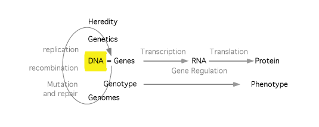

DNA and RNA: structure and properties

The information needed to make and run a living thing is stored in the sequence of nucleotides in DNA and, sometimes, for viruses, in RNA. Here we consider the basic properties of these molecules and touch on some of their higher-order structures in different living things.
- Study Guide
- MBoC(6th) Ch2, Ch4, Ch5 (See Study Guide for pages.)
- Narration: DNA and RNA - part 1
- Narration: Learning to speak DNA
- Narration: DNA and RNA - part 2
- Narration: Duplex molecules in motion
- Narration: DNA supercoiling
- Narration: Chromatin
- Nice tutorial on DNA structure
- Video:Double-Stranded DNA structure [not available on this site]
- Video:Chromatin [not available on this site]
10/10/21